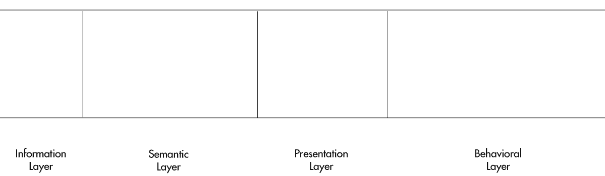
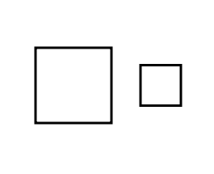

Appendix
Site Wide
Apart from Panel View, these symbols are rarely used.
-
System - A collection of views/screen
-
View - Application Template/View/Screen
-

Panel View - Panel describing all interactions in a view/screen, divided into sections representing the four UI layers (Information/Semantic/Presentation/Behavioral)
Information Layer
-
Content Block/Fragment - Structured content from Information Layer, no semantic layer included
-
Content (External) - Structured content from an external source/server
Semantic Layer
-
Semantic Block/Fragment - A block/fragment of semantic (HTML/Microformats) code
-
Semantic Block (External) - A block/fragment of semantic (HTML/Microformats) code from an external source/server
-
Semantic Block (Inline) - A block/fragment of semantic (HTML/Microformats) code embedded directly into template/view/screen
Presentation Layer
-

Presentation Block/Fragment - A block/fragment of CSS code (Default Mode - no media query conditions)
-
Presentation Block (External) - A block/fragment of CSS code from and external source/server
-
Presentation Block (Inline) - A block/fragment of CSS code embedded directly into template/view/screen
-
Conditional Mode - Device Only - Block/Fragment of CSS code, set for certain devices only - media="[list of devices]", i.e. print, screen, screen reader, etc.
-
Conditional Mode - Conditions Only - Block/Fragment of CSS code, set for certain conditions only - media="all" and/or (conditions), i.e. screen width, orientation, etc.
-
Conditional Mode - Device/Conditions Combined - Block/Fragment of CSS code, set for certain devices at specific conditions - media="[list of devices]" (list of conditions)
Behavioral Layer
-
Behavioral Block/Fragment - A block/fragment of JavaScript code
-
Behavioral Block (External) - A block/fragment of JavaScript code from and external source/server
-
Behavioral Block (Inline) - A block/fragment of JavaScript code embedded directly into template/view/screen
-
Plugins - Scripts that are an extension of base script (additional features)
Extras
-
External Framework - A combination of layers (JS/CSS/HTML) applied to a view (jQuery Mobile, Sencha Touch, JQuery UI, etc.)